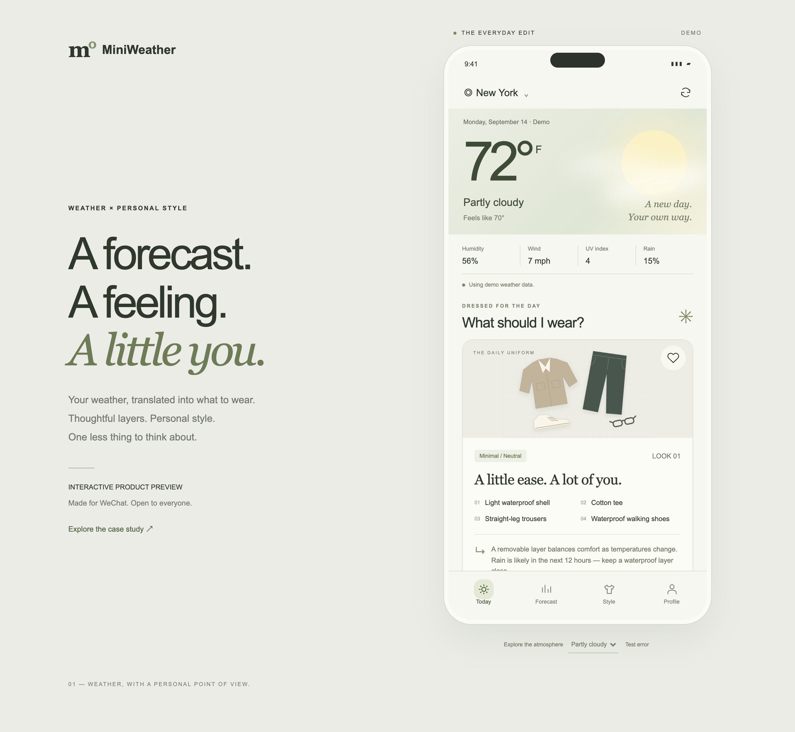
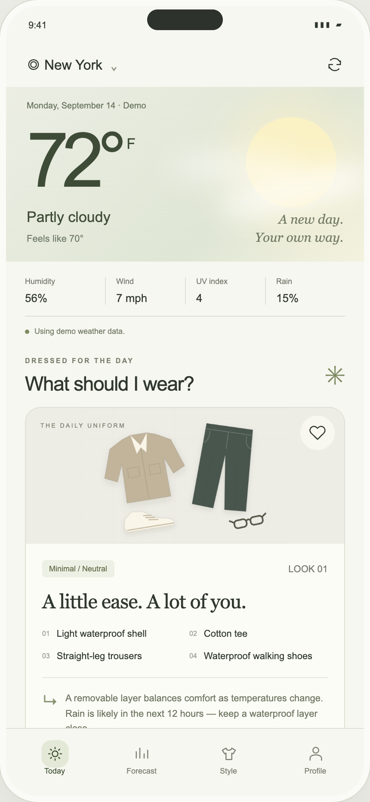
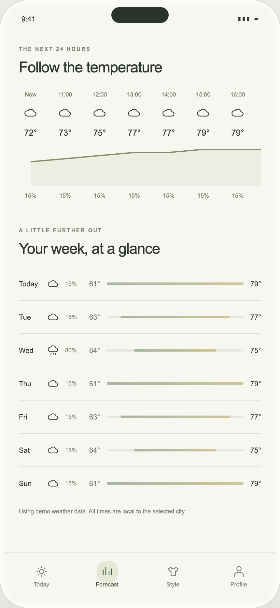
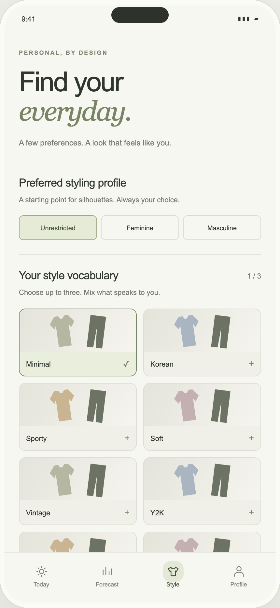

WECHAT MINI PROGRAM · PRODUCT ENGINEERING
Dress for the weather.
Feel like yourself.
MiniWeather turns a forecast into a thoughtful daily outfit, guided by personal style and how you experience temperature.
This interactive browser demo uses fixed synthetic weather and explainable rules, not connected AI. A live weather backend and WeChat DevTools / physical-device validation remain outstanding. All screenshots below are from the browser preview.

A temperature isn't
a decision.
Weather apps tell us what the weather is. We still have to interpret what that means for our day—and our clothes. A warm afternoon can hide a cold morning. And 65° feels different to everyone.
Weather, with a
personal point of view.
The product interprets the next twelve hours, combines them with style preferences and temperature sensitivity, and recommends pieces with clear reasons. Users can try another look or keep one they love.
One small routine.
One less decision.



Two interfaces.
One source of logic.
The native WeChat interface and browser preview share a pure JavaScript engine, preference schema, weather fixtures and formatting utilities. The native app uses reusable WXML components; browser views consume a generated core bundle.
A validated weather-service boundary separates future provider access from the rule engine. Current fixtures are visibly marked as demo data.
Rules you can explain
- Apparent temperature and personal sensitivity establish insulation.
- Rain, wind and forecast swings override aesthetic choices when protection matters.
- Humidity, UV and time of day add fabric and accessory advice.
- Variant selection is reproducible, and saved looks have stable identities.
Designed beyond
the happy path.
Recovery covers denied location, unavailable weather, malformed preferences, storage quota errors and empty collections. Browser checks exercise the full journey across four mobile viewport sizes.
The screenshots are from the working web preview. Native DevTools compilation and real-device acceptance remain outstanding; no live weather backend or public release is claimed for the native mini program.
What comes next
- Connect a production weather backend and broader geocoding.
- Complete native iOS and Android acceptance.
- Expand the garment catalog, illustrations and feedback-based evaluation.